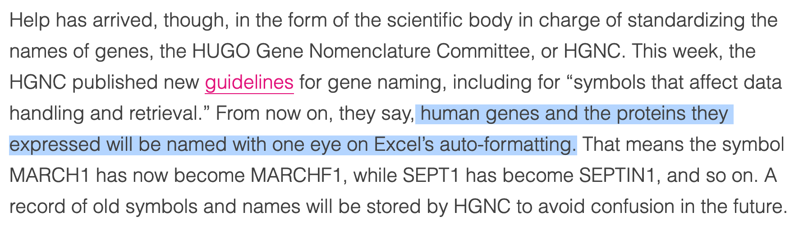
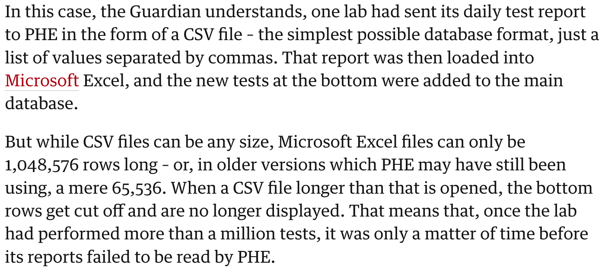
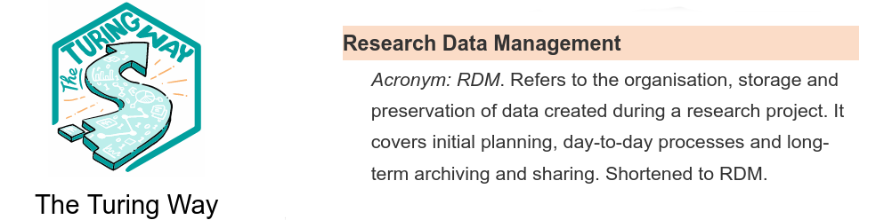
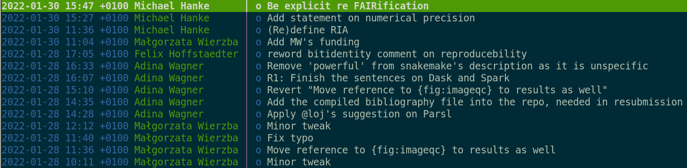
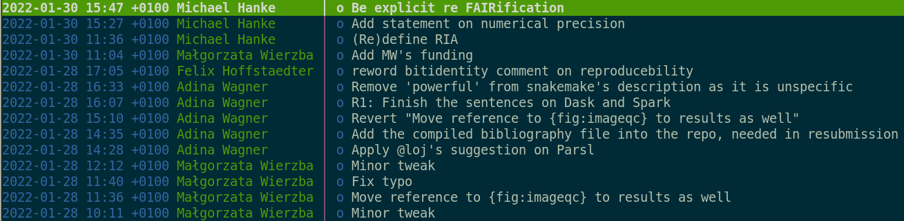
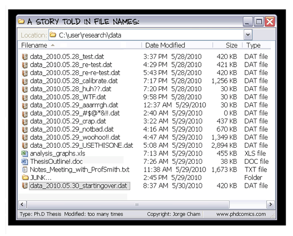
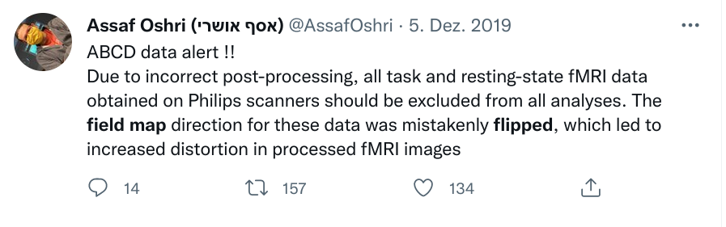
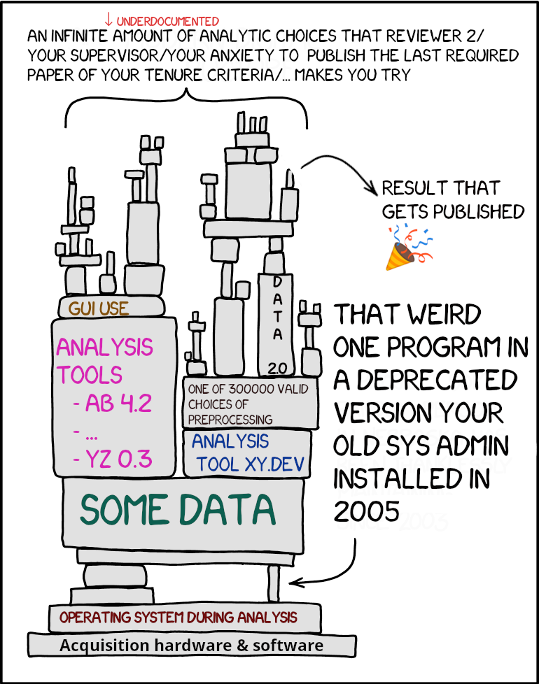
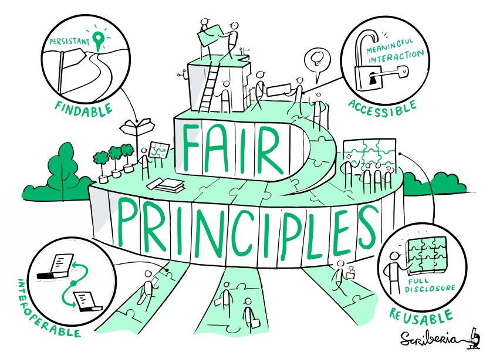
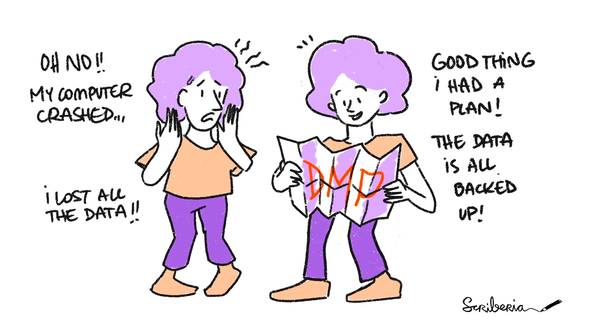

Research data management
👩â€ğŸ’»ğŸ§ 👨â€ğŸ’»
for Neuroimagers
|
Adina Wagner @adswa@mas.to  @AdinaKrik @AdinaKrik
|
|
|
|
Psychoinformatics lab,
Institute of Neuroscience and Medicine (INM-7) Research Center Jülich Institute of Experimental Psychology, HHU Düsseldorf |
Slides: DOI 10.5281/zenodo.7419377 (Scan the QR code)
Research data management?






What exactly is RDM?
RDM - for whom?


Funders & publishers require it

Scientific peers & the public increasingly expect it
Win over academic staff (librarians, system administrators)
Your future self will be grateful
Without good RDM, any project becomes dreadful.
RDM in Neuroimaging
-
Some peculiarities of our field...
- Depending on acquisition hardware and analysis software, some data are in proprietary formats (e.g., Neuromag, brain voyager, brain vision)
- Depending on field, data can be sizeable (e.g., (f)MRI, CT, EEG, PET, MEG)
- Heterogenous data from complex acquisitions with multiple data channels and modalities
- Datasets are getting bigger and bigger (Bzdok & Yeo, 2017), e.g. multi-modal imaging, behavioral + genetics data in HCP (humanconnectome.org) or UKBiobank (ukbiobank.ac.uk/)
- Some data fall under General Data Protection Regulation (GDPR)
- Complex, multi-stepped analyses

... make RDM more difficult, but also more relevant
|
|
bids.neuroimaging.io
Open {software,standards}


- remove accessibility barriers
- allow transparent digital provenance
- The building blocks of a scientific result are rarely static
| Analysis code evolves (Fix bugs, add functions, refactor, ...) |

|


Version control

|
|
 

- The building blocks of a scientific result are rarely static
| Data changes (errors are fixed, data is extended, naming standards change, an analysis requires only a subset of your data...) |


|
git-annex and
DataLad version control large data


Leaving a trace
"Shit, which version of which script produced these outputs from which version of what data?"
"Shit, why buttons did I click and in which order did I use all those tools?"


1) Create an intuitive structure, and
2) write (plenty! of) documentation as you go, and
3) make your processes machine-readable
Tools and tricks: Perkel, 2020,
checklist for computational reproducibility
Research data management is tied to reproducibility
Back-Ups and Archival
Ensure that your data are regularily backed-up, and eventually deposited in an appropriate archive or repository- Back-ups
- Keep back-ups on different infrastructure, ideally even different physical locations
- Synchronize regularly
- My personal workflow: Distributed version control
- Software
- E.g., Software Heritage , Zenodo (both have automatic GitHub integrations)
- Data
- E.g., Zenodo, Gin.g-node.org Neurovault, DataVerse, Data DRYAD, FigShare
Further reading: the-turing-way.netlify.app/reproducible-research/rdm/rdm-sharing.html
Digital Object Identifiers
- Example: 10.5281/zenodo.7419377 (uniquely & persistently identifies this talk)
- Provide a persistent, trusted reference. Resolve any DOI at doi.org
- Make your work citeable

- Get a DOI from
- free academic services and archives that you already use, such as Zenodo, FigShare, or OSF
- your own institutions (e.g., library, DataVerse, ...)
- Preprint servers, publishers
- My tip for large datasets: Gin.g-node.org
Licenses
- Everything you (co-)create has a copyright, and you're a/the copyright holder
- Without a license your work is unusable by others
- Use an established license rather creating one yourself
- Different licenses are suitable for different types of work
| Software | Data (e.g., comics, text) |
|
License picker |
Creative Commons |
Beware!
"Non-commercial"
can have undesired side-effects
FAIR
Wilkinson et al., 2016: "The FAIR Guiding Principles for scientific data management and stewardship", doi.org/10.1038/sdata.2016.18
Data Management Plans (DMP)
- A Data Management Plan (DMP) is a brief plan to define:
- how the data will be created or used
- how it will be documented
- who will be able to access it
- where it will be stored
- who will back it up
- whether (and how) it will be shared and preserved.
Further reading: https://ukdataservice.ac.uk/learning-hub/research-data-management
Take home messages
- RDM is a continuous process
- There is an ecosystem of resources, infrastructure, and experts to assist you at every step. Befriend your local librarian!
- The biggest beneficiary of RDM? Yourself
- The second biggest beneficiary of RDM? Yourself in 6 months
- The consequence of good RDM? Better science
Thanks for your attention
Slides at DOI 10.5281/zenodo.7419377

|
Women neuroscientists are underrepresented in neuroscience. You can use the Repository for Women in Neuroscience to find and recommend neuroscientists for conferences, symposia or collaborations, and help making neuroscience more open & divers. |